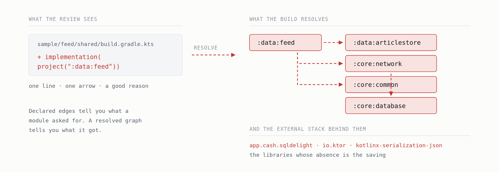
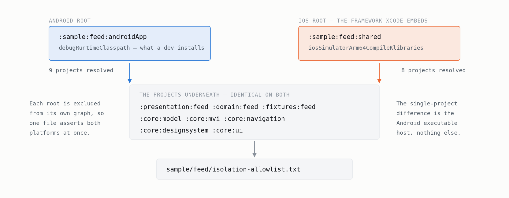
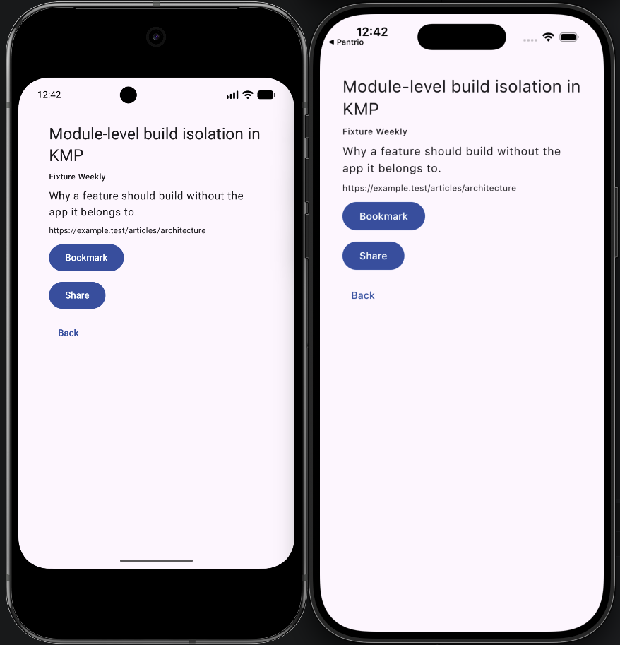
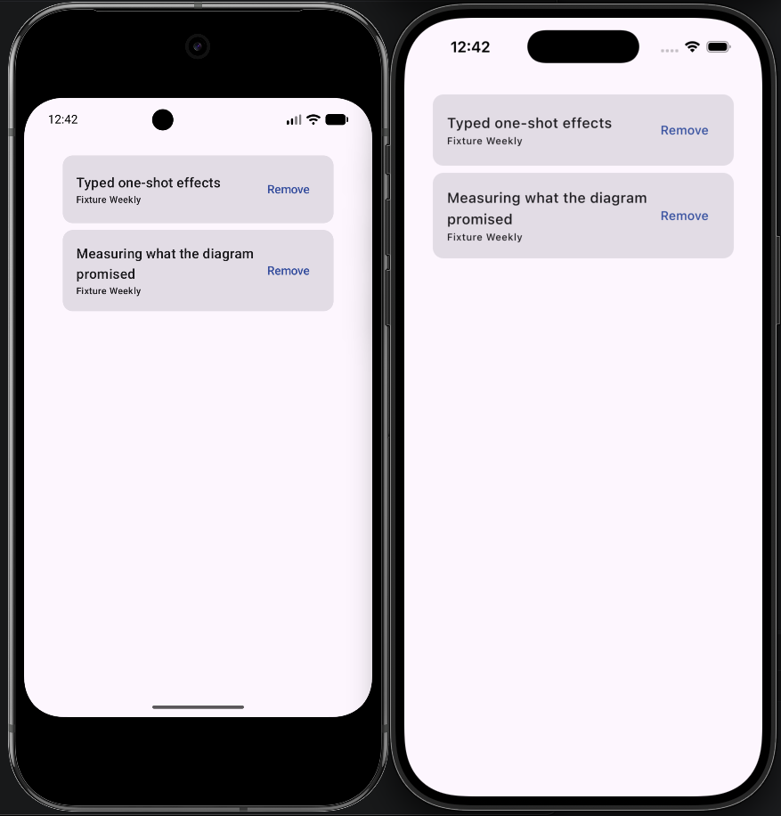

One Declared Edge, Five Unexpected Modules · Part 2 of 3 · Gradle
Folder Shape Is Not Evidence
Making a Gradle build prove that a KMP feature is isolated — on Android and iOS.
The architecture in this series was developed in a private 62-module, 11-feature codebase. The public repository — github.com/kilcimurat/kmp-architect-sample-app — is the three-feature reference extracted from it, where every command below runs.
Part 1 ended with a number: a feature sample executes 9 Gradle tasks when the production data layer changes, because it does not depend on the data layer.
That number is worth exactly as much as your confidence that it will still be true in six months.
It won’t be, by default. Someone needs one convenient thing.
implementation(project(":data:feed")) compiles, tests pass, review approves it — the diff
is one line and the reason is good. The graph grows, the loop gets slower by an amount too small to
notice in any single build, and eighteen months later the architecture is a diagram in a wiki.
So the interesting engineering here is not the topology. It is the verification.
Two checks, and why they are separate
./gradlew architectureCheck # declared edges, external dependencies, source rules
./gradlew isolationCheck # every sample's resolved graph vs. a checked-in allowlist
architectureCheck reads what each module declares. Fast, runs on metadata
and source text, catches the rule you broke on purpose.
isolationCheck resolves a real classpath and enumerates every project on
it. Slower, and catches the rule you broke by accident — through a transitive edge two projects away
that nobody in the review could see.
You need both, because only the second one is evidence. Declared edges tell you what a module asked for. A resolved graph tells you what it got.
Gate one: rules as pure functions
The rule set is plain Kotlin in an included build, with no Gradle types near it:
private val forbiddenTargets: Map<Layer, Set<Layer>> = mapOf(
Layer.Core to setOf(Domain, Data, Presentation, Fixtures, Sample, App),
Layer.Domain to setOf(Data, Presentation, Fixtures, Sample, App),
Layer.Presentation to setOf(Data, Sample, App),
// the load-bearing rule
Layer.Sample to setOf(Data, App),
)
Classification comes from the project path alone — :domain:feed is
Layer.Domain, feature feed. If a module’s path doesn’t say what it is, the
topology is already unclear.
Pure functions over immutable data are unit tested directly, without executing Gradle. That includes the cases that must not fire, which is the half people skip:
Adding a rule? Add the rejection fixture in the same commit, or the rule is unproven.
A rule with no test proving it rejects something is a rule you hope works.
Failures that read like a code review
Rules return a message, not an error code:
from.layer == Layer.Sample && to.layer == Layer.Data ->
"A sample must not bind real repositories. This edge pulls network, persistence " +
"and serialization into the feature development loop, which is the cost this " +
"topology exists to remove."
The developer who hits this is, by definition, someone who did not know the rule.
Forbidden dependency: :sample:feed:shared -> :data:feed tells them they are blocked. The
text above tells them why — the difference between fixing the design and hunting for the suppression
flag.
The escape hatches are the design
Nothing is forbidden absolutely. Everything unusual is recorded, in files meant to be edited in review:
# config/api-allowlist.txt — every api edge, with its reason
:domain:feed -> :core:model # FeedRepository and its use cases expose Article
:fixtures:feed -> :domain:feed # FakeFeedRepository implements FeedRepository
# config/infrastructure-modules.txt — data modules that are plumbing, not a feature
:data:articlestore # feed writes it, article and bookmarks read itapi-allowlist.txt · infrastructure-modules.txt
That second file is a real hole — “it’s infrastructure” is the easiest way to talk yourself out of a feature boundary. So the exemption has a price, enforced by its own rule: an infrastructure module may be used by any feature, and may therefore depend on none.
The label buys you something and costs you something. That is what keeps it from becoming free.
Checks that dependency metadata cannot see
A module can import a forbidden type from a dependency it is legitimately allowed to have. Gradle sees nothing wrong. So a second family of rules reads source text:
private val fixturesForbidden = listOf(
ImportRule("io.ktor", "A fixture that performs real I/O is not deterministic."),
ImportRule("kotlin.random.Random", "Fixtures must use fixed or explicitly seeded randomness."),
ImportRule("kotlin.time.Clock", "Fixtures must use fixed or injected time."),
)A fixture that reads the wall clock is not a fixture. It is a flaky test waiting for a specific Tuesday.
One detail worth stealing: the check matches an actual import statement, not any occurrence
of the text — otherwise the comment explaining why Compose is forbidden becomes a violation of the rule
it is explaining.
Gate two: resolve the graph, name every project on it
Each sample has a checked-in file:
# sample/feed/isolation-allowlist.txt
:sample:feed:shared
:presentation:feed :domain:feed :fixtures:feed
:core:model :core:mvi :core:navigation :core:designsystem :core:uisample/feed/isolation-allowlist.txt
The task resolves the sample’s real classpath and reports three things: unexpected projects, forbidden external coordinates, and stale allowlist entries.
That third one matters more than it looks. An allowlist that only ever grows stops describing the graph and starts describing its history.
When it bites, it names names. Real output from adding :data:feed to the feed sample:
isolationCheck FAILED
ios: :sample:feed:shared (iosSimulatorArm64CompileKlibraries)
unexpected project on the resolved graph: :core:database
unexpected project on the resolved graph: :data:feed
forbidden external dependency reached the sample: app.cash.sqldelight:native-driver
allowlist: sample/feed/isolation-allowlist.txt
One declared edge. Five unexpected projects. That gap is the whole argument for resolving a classpath instead of reading build files — no reviewer sees four of those five in the diff.
The part that is specific to KMP
For a while this gate only checked Android: each sample executable’s debugRuntimeClasspath.
That is half a gate. A static Apple framework links whatever reaches it exactly as happily as an APK packages it. If a data module leaked into the iOS graph, the framework would link, the sample would run, and the Android check would keep reporting isolation. “It links” is not evidence of anything.
So the check registers two tasks per sample, against one allowlist:
const val ANDROID_CONFIGURATION = "debugRuntimeClasspath"
const val IOS_CONFIGURATION = "iosSimulatorArm64CompileKlibraries"ArchitectureConventionPlugin.kt

Sample Android graph iOS graph
---------- ------------- ---------
Feed 9 projects 8
Article 10 projects 9
Bookmarks 9 projects 8Each root is excluded from its own graph, so the projects underneath must match on both platforms — one file asserts both. The single-project difference is the Android executable host.
Those graphs are not a theory about what would link. All three samples run:


One property is worth calling out for anyone developing KMP on Linux: the iOS gate resolves dependency metadata rather than invoking the Apple toolchain, so it is valid on any host. That is unusual, because the normal situation is this:
linkDebugFrameworkIosSimulatorArm64 SKIPPED
BUILD SUCCESSFULOn Linux, Apple link and test tasks are silently skipped while Gradle reports success. A CI job running the link task on a Linux runner goes green without linking anything. A green Linux build proves nothing about iOS — except for this one check, precisely because it never asks the Apple toolchain anything.
Two things I would have gotten wrong
A missing configuration must fail, not skip.
val configuration = sample.configurations.findByName(configurationName)
?: error("isolationCheck cannot resolve '$configurationName' on ${sample.path}. " +
"The $platform gate would silently stop running.")ArchitectureConventionPlugin.kt
The obvious code is ?: return. Rename a configuration in a future AGP and the gate stops
registering: build green, report still claiming isolation. A check that quietly stops running is worse
than no check, because it produces false confidence instead of none.
Sometimes the rule is what’s wrong. The first run flagged
kotlinx-serialization-core in every sample. Serialization leaked in? No — typed navigation
routes are @Serializable, so the core runtime legitimately reaches every sample. Only the
JSON parser, which exists to turn DTOs into models, indicates the data layer got in.
The code was fine. The rule was wrong.
If your first architecture-check run produces zero violations, be suspicious. If it produces violations you disagree with, at least one of you is learning something.
Isolated Projects: measured, then declined
Gradle’s Isolated Projects parallelises configuration, and this repository’s root plugin is incompatible
with it — it reads subproject configurations through allprojects.
The tempting move is to schedule the migration. Instead the prize was measured first, on a 128-core machine: the entire configuration phase is worth about one second there, and it is skipped outright on a configuration-cache hit — which is the normal state of an edit-compile loop.
Feasibility was confirmed separately (with the plugin disabled, the build passes under the flag), so the blocker is known and the migration design is written down. It is a decision with a number attached rather than an open item that quietly ages.
One caveat on that number, since the rest of this series is about not dressing measurements up: it comes from a 128-core Linux machine, while the build timings in Part 1 come from a 12-core laptop. A smaller host configures more slowly, so the prize there is larger than one second — still behind a configuration-cache hit, but the decision is worth re-measuring on the machine your team actually uses.
What this costs you
- The gates are only as good as whoever runs them. Both commands run on every push, on an Ubuntu runner — the practical payoff of the property above, since the iOS half never asks the Apple toolchain anything. Framework linking, the Xcode host builds and the iOS tests are what still need macOS, and this repository leaves those to a local run.
- Cross-project configuration access is spent. It is what blocks Isolated Projects today.
- Rule maintenance is ongoing. Source rules are text matching, and text matching has false positives. Every rule carries unit tests including negative cases, so tightening one is a normal change rather than an archaeology project.
Part 3 turns to the MVI layer: pure reducers, typed one-shot effects on a channel that deliberately fails loudly, and the source rules that make all of it a build failure rather than a convention.